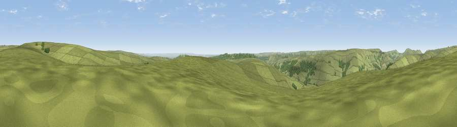

Viewpoint near Chop Gate
#12276 in England · top 32% of its area beats it · near Chop GateThe view, rendered

A 360° render of this exact spot computed from the terrain model, tree cover and land cover — summer colours, afternoon light, calibrated against photographs of famous viewpoints. Real trees, hedges and buildings will differ in detail.
The panorama
Grey silhouette: terrain skyline in each direction (720 bearings, Earth curvature and refraction included). Dashed green: skyline with trees (+15 m) and buildings (+8 m) as obstacles. Blue strip: how far the ground is visible on each bearing.
Where the view opens
Wedge length = distance to the farthest visible ground on that bearing (vegetation-aware). Rings at 10, 25 and 50 km.
What fills the view
90% grassland · 8% woodland · 2% cropland
Angular shares of the visible panorama (visual magnitude), not map area. Landscape diversity 0.17 (0–1 Shannon).
Key numbers
More beautiful places nearby
The staircase of upgrades: each row has a higher view potential than everything closer. Driving times are estimates from straight-line distance, calibrated against real road routing — check an actual route before setting out.
| Place | Direction | Drive | Score |
|---|---|---|---|
| Viewpoint near Chop Gate | SSE · 1 km | ~2 min | 61.1 |
| Viewpoint near Chop Gate | NE · 2 km | ~5 min | 62.6 |
| Viewpoint near Chop Gate | NE · 2 km | ~6 min | 65.4 |
| Rievaulx Moor | S · 5 km | ~12 min | 69.0 |
| Viewpoint near Carlton | S · 5 km | ~12 min | 69.1 |
| Viewpoint near Carlton | SSE · 6 km | ~13 min | 71.4 |
| Viewpoint near Carlton | SE · 6 km | ~13 min | 71.6 |
| Viewpoint near Ingleby Greenhow | NNE · 7 km | ~15 min | 75.6 |
54.35541, -1.08869 · source: screening · position refined by local search. Computed location — check access rights before visiting.